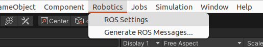
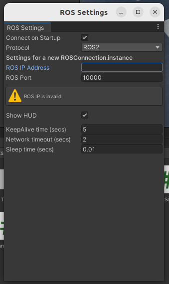
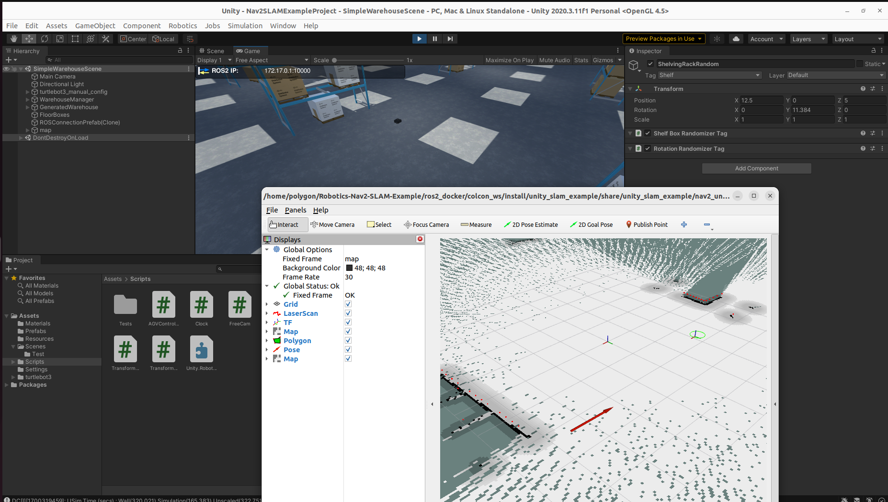

https://github.com/Unity-Technologies/Robotics-Nav2-SLAM-Example
GitHub - Unity-Technologies/Robotics-Nav2-SLAM-Example: An example project which contains the Unity components necessary to comp
An example project which contains the Unity components necessary to complete Navigation2's SLAM tutorial with a Turtlebot3, using a custom Unity environment in place of Gazebo. - GitHub - Unity...
github.com
Unity에서 ROS2를 이용해 SLAM을 구현하기 위해 위 깃허브 예제를 사용하였다.
(ubuntu 22.04, ros2 humble, unityhub 3.6.1, unity 2020.3.11f1 사용)
sudo apt update
sudo apt install git우선 git을 설치설치
ssh-keygen -t rsa -C "github 메일 주소"
cat /home/[계정명]/.ssh/id_rsa.pub해당 명령을 통해 ssh키를 생성하고, cat 명령으로 키를 확인 및 복사하여 github에 추가
git clone --recurse-submodule git@github.com:Unity-Technologies/Robotics-Nav2-SLAM-Example.git이제 git clone으로 예제파일을 받아오자
이후 git clone 해온 Robotics-Nav2-SLAM-Example 디렉터리 내의 Nav2SLAMExampleProject를 unityhub에서 Add 해주자!
Unity 프로젝트가 켜지고 그냥 실행해보면 'DINotFoundException : libdl.so' 어쩌구하는 에러가 하나 있다...
이는 아래의 명령으로 해결...!!
sudo ln -s /lib/x86_64-linux-gnu/libdl.so.2 /lib/x86_64-linux-gnu/libdl.so
위 깃허브 README 파일에서는 docker를 이용한 실행과정을 보여주는데...나는 저 과정대로 가면 정체를 알 수 없는 오류가 와장창 뜬다...해결해보려 했으나 결국 포기...다른 방법을 찾아서~
ROS2 사용
우선 아래의 명령으로 ROS IP 주소를 받아오자
hostname -I
그리고 unity 프로젝트 내에서 상단 메뉴들 중 Robotics -> ROS Settings에 들어가자

ROS IP Address에 방금 찾은 IP 주소를 입력

다시 터미널로 돌아와서...
/Robotics-Nav2-SLAM-Example/ros2_docker/colcon_ws 경로에서 colcon build로 빌드해주자
colcon build
그리고 해당 경로에서 소싱 진행
source install/setup.bash
이후 ros2 launch 명령을 실행해주자 + unity도 실행
ros2 launch unity_slam_example unity_slam_example.py

2D Goal Pose로 로봇을 움직이고 맵핑이 되는 것을 확인할 수 있다!! (감격...ㅠㅠ)